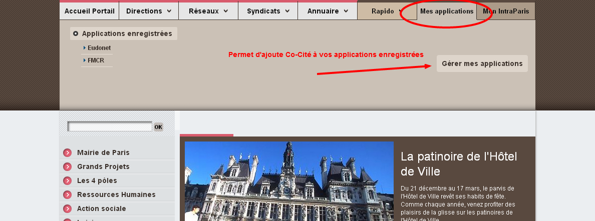
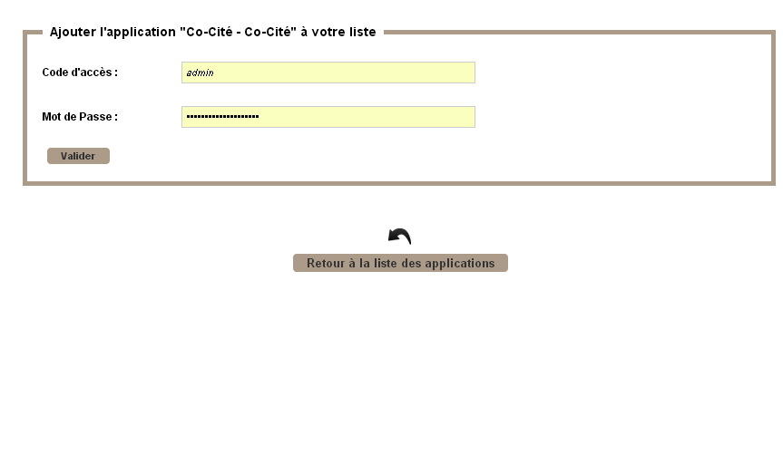

Arrivez déjà connecté à DansMaRue/Ramen depuis le bandeau Intraparis.
Les différentes étapes qui suivent permettent d'arriver sur votre application DansMaRue/Ramen directement depuis le bandeau Intraparis et ne pas avoir à saisir l'identifiant et le mot de passe à chaque fois



Fermez alors le fenêtre et rafraichissez votre page Intraparis.
Dans "Mes applications", le lien DansMaRue permet d'arriver directement connecté sur l'application.
Astuce : Vous pouvez mettre le lien suivant dans un favoris de votre navigateur préféré en remplaçant IDENTIFIANT par votre identifiant et MOTDEPASSE par votre mot de passe dans l'url suivante : http://r57.apps.paris.mdp/sira/jsp/admin/DoAdminLogin.jsp?access_code=IDENTIFIANT&password=MOTDEPASSE
Vous arriverez ainsi directement connecté sans avoir à saisir votre identifiant et mot de passe.